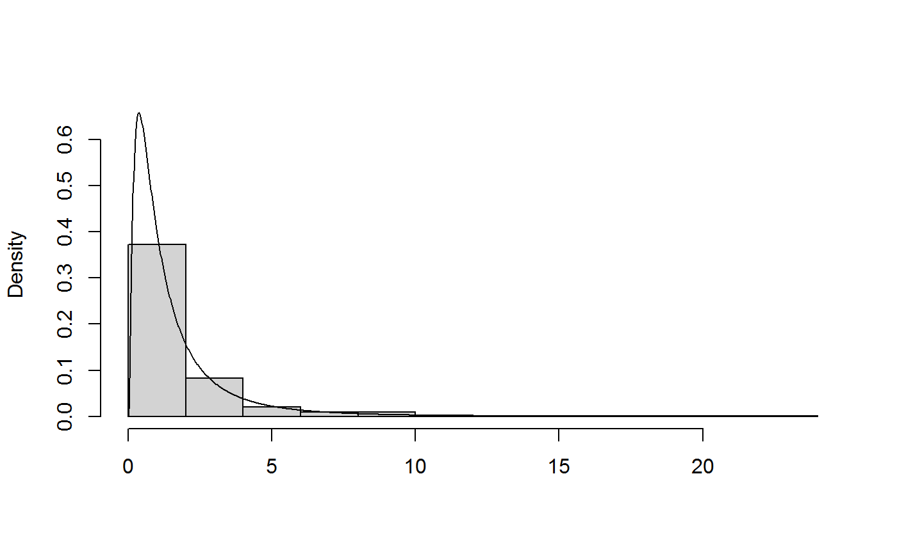
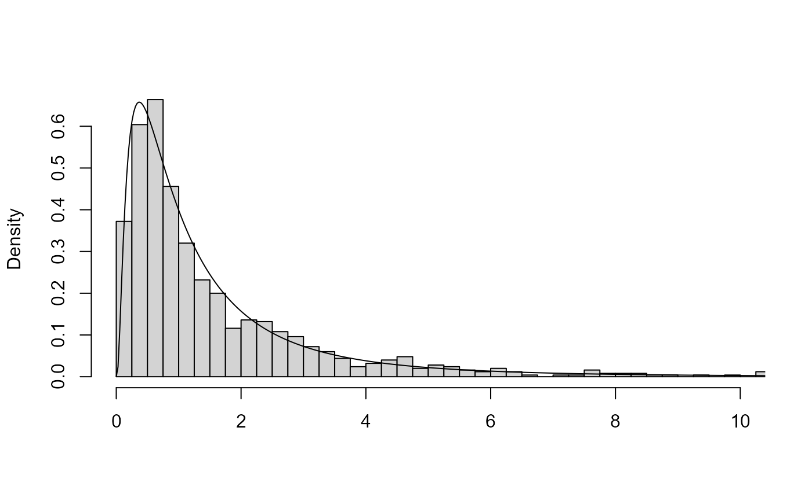
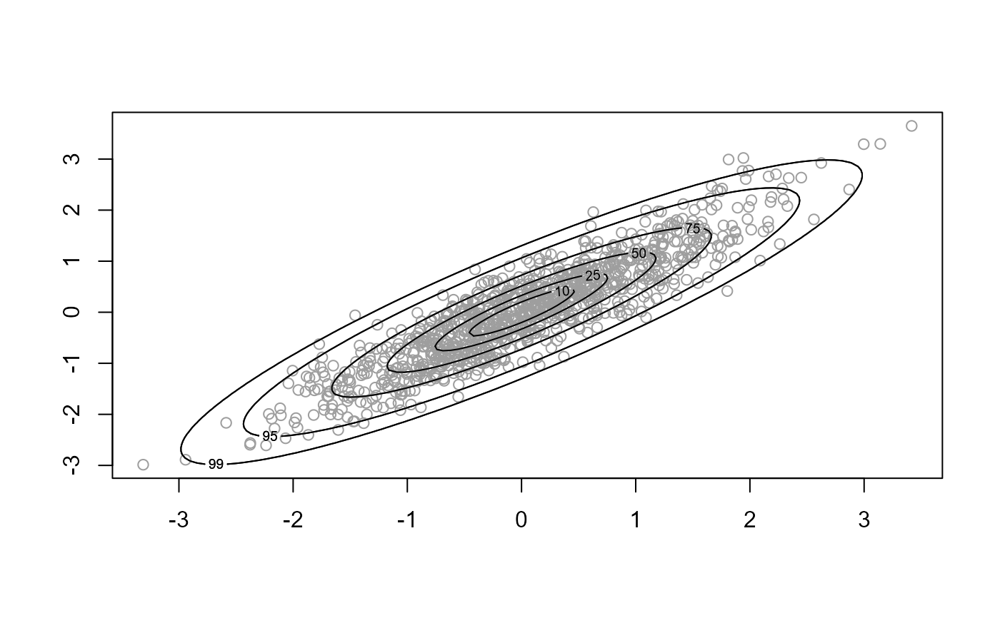

plot method for class "ru". For d = 1 a histogram of
the simulated values is plotted with a the density function superimposed.
The density is normalized crudely using the trapezium rule. For
d = 2 a scatter plot of the simulated values is produced with
density contours superimposed. For d > 2 pairwise plots of the
simulated values are produced.
an object of class "ru", a result of a call to ru.
Not used.
Additional arguments passed on to hist, lines,
contour or points.
A numeric scalar. Only relevant if x$d = 1 or
x$d = 2. The meaning depends on the value of x$d.
For d = 1 : n + 1 is the number of abscissae in the trapezium method used to normalize the density.
For d = 2 : an n by n regular grid is used to contour the density.
Numeric vector. Only relevant for d = 2. The contour
lines are drawn such that the respective probabilities that the variable
lies within the contour are approximately equal to the values in
prob.
A logical scalar. Should we plot data and density on the
scale used in the ratio-of-uniforms algorithm (TRUE) or on the
original scale (FALSE)?
A numeric scalar. When d > 2 this sets the number of
rows of plots. If the user doesn't provide this then it is set
internally.
Numeric vectors. When d > 2 these set the labels
on the x and y axes respectively. If the user doesn't provide these then
the column names of the simulated data matrix to be plotted are used.
A character (or numeric) vector of length x$d. This
argument can be used to replace variable names set using var_names
in the call to ru or ru_rcpp.
A list of arguments to pass to
points to control the appearance of points
depicting the simulated values. Only relevant when d = 2.
No return value, only the plot is produced.
summary.ru for summaries of the simulated values
and properties of the ratio-of-uniforms algorithm.
# Log-normal density ----------------
x <- ru(logf = dlnorm, log = TRUE, d = 1, n = 1000, lower = 0, init = 1)
# \donttest{
plot(x)

# }
# Improve appearance using arguments to plot() and hist()
# \donttest{
plot(x, breaks = seq(0, ceiling(max(x$sim_vals)), by = 0.25),
xlim = c(0, 10))

# }
# Two-dimensional normal with positive association ----------------
rho <- 0.9
covmat <- matrix(c(1, rho, rho, 1), 2, 2)
log_dmvnorm <- function(x, mean = rep(0, d), sigma = diag(d)) {
x <- matrix(x, ncol = length(x))
d <- ncol(x)
- 0.5 * (x - mean) %*% solve(sigma) %*% t(x - mean)
}
x <- ru(logf = log_dmvnorm, sigma = covmat, d = 2, n = 1000, init = c(0, 0))
# \donttest{
plot(x)

# }